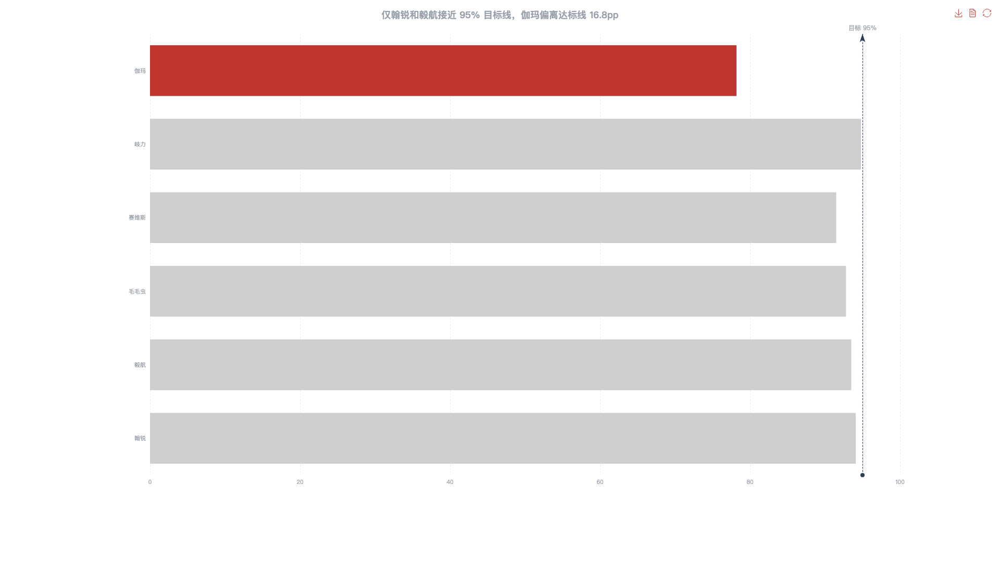
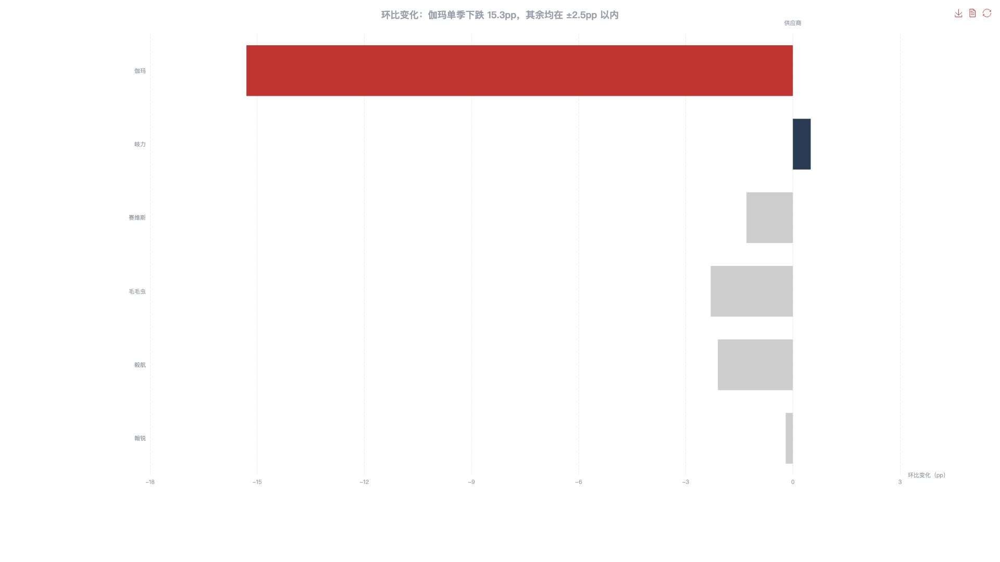
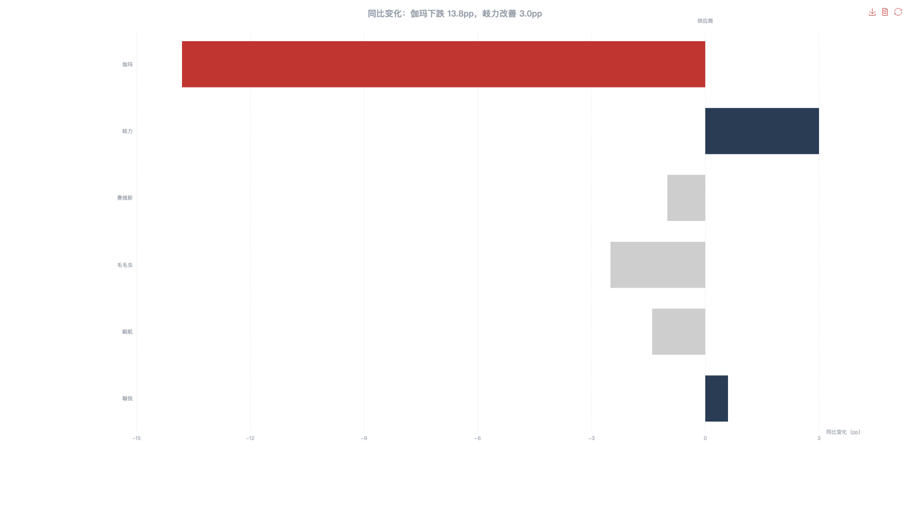

数据科技业务部 · 服务组
2026 Q1
供应商季度绩效汇报
金条业务线 · 6 家头部供应商 · 2026 年 1-3 月
汇报人：供应商管理组 | 受众：王易人、卞海军
开场白：各位好，今天汇报 Q1 供应商绩效。核心结论一句话——伽玛本季度履约率暴跌 15 个百分点，已经到了需要立即干预的程度。下面我用 5 页数据展开。
核心结论
伽玛触发合规红线，需立即干预
伽玛 Q1 履约率暴跌 15.3pp 至 78.2%，已触发合规红线。建议立即削减其金条产线分量 20%，同步启动备选供应商引入；对连续两季改善的岐力增配 10%，释放正向信号。
三个关键数字
78.2%
伽玛 Q1 履约率
距目标线 -16.8pp
这是本次汇报的核心结论。伽玛的 78.2% 远低于 95% 目标线，偏差达 16.8 个百分点。同时注意岐力是唯一正增长的供应商，建议作为正向标杆。
一、现状总览
Q1 供应商履约率：仅翰锐和毅航接近目标线

伽玛 78.2% 偏离达标线 16.8pp，是唯一严重异常的供应商。虚线为 95% 目标线。
数据来源：2026Q1 供应商绩效数据 | 目标线 95%
这张图是全局视角。注意两点：第一，伽玛的柱子明显短于其他所有供应商，这不是正常波动。第二，即使表现最好的翰锐和毅航，也没有达到 95% 的目标线，说明整体大盘有下行压力。接下来看变化趋势。
二、核心问题：伽玛异常分析
伽玛三项指标均偏离正常水平
质检不合格率
18%
均值 6%
超标 3.0 倍
投诉率
8.7‰
均值 3.5‰
超标 1.5 倍
春节返工率
62%
达标线 85%
缺口 23pp
三项指标同时偏离，说明是系统性问题，非单点故障。每条进度条上方为实际值，下方为均值/达标线参照。
数据来源：2026Q1 伽玛运营数据 | 均值：全体供应商平均水平
我们排查了伽玛异常的原因，发现三项关键指标同时偏离正常水平。质检不合格率 18% 是均值的 3 倍，投诉率 8.7‰ 是均值的 2.5 倍，春节返工率仅 62% 低于达标线 23 个百分点。这不是单一问题，而是系统性失效——新人多导致质检差，质检差导致投诉高，三者互相强化。
三、对比验证
环比变化：伽玛下跌 15.3pp，其余均在 ±2.5pp 以内

供应商顺序与全景图一致。伽玛单季跌幅远超正常波动范围。零基线为 0pp 参照。
数据来源：2026Q1 vs 2025Q4 供应商绩效数据
这张图排除了"整体大盘都不好"的可能性。其余 5 家的变化都在正负 2.5 个百分点以内，属于正常的季度波动。伽玛的 15.3pp 下跌是唯一的离群值。同时注意岐力逆势增长 0.5 个百分点，说明在同样的市场环境下，有供应商能做到持续改善。
三、对比验证
同比变化：伽玛下跌 13.8pp，岐力改善 3.0pp

对比去年同期（2025Q1），伽玛是唯一严重下跌的供应商。岐力连续两季正增长。
数据来源：2026Q1 vs 2025Q1 供应商绩效数据
对比去年同期数据——伽玛同比下跌 13.8 个百分点，而其他供应商同比变化都在正负 2.5 以内。这说明不是季节性波动。岐力甚至同比改善了 3 个百分点，连续两个季度正增长，证明在同样环境下改善是可能的。
四、行动建议
建议 4 项行动
| 优先级 |
动作 |
对象 |
幅度 |
时限 |
| P0 |
削减分量 |
伽玛 · 金条产线 |
-20% |
4 月内 |
| P0 |
启动备选引入 |
金条新供应商 |
引入 2 家 |
5 月底前 |
| P1 |
增配分量 |
岐力 |
+10% |
5 月起 |
| P1 |
约谈整改 |
毛毛虫 |
履约率需回升至 95% |
Q2 末 |
注：幅度调整基于 Q1 绩效数据，实际执行需综合人力与产能评估
基于以上数据，我建议四项行动：第一，立即削减伽玛金条产线 20% 分量，降低风险敞口。第二，同步启动备选供应商引入，金条产线伽玛占 60%，需要有替代方案。第三，对持续改善的岐力增配 10%，释放正向信号——做得好有回报。第四，毛毛虫虽然下滑幅度不大，但连续两季下滑，需要约谈明确整改要求。请审批。
汇报结束
总结与风险提示
Q1 核心发现：剔除伽玛后，其余 5 家均值 93.3%，环比 -1.1pp，在正常波动范围内。伽玛问题根因是春节返工率暴跌叠加质检失控，非短期波动。建议削减其金条分量 20%，同步启动备选引入；对持续改善的岐力增配 10%。
风险与局限性
- 伽玛 60% 依赖金条产线，分量削减可能进一步恶化其人力稳定性
- 备选供应商引入周期通常 2-3 个月，4 月内完成有压力
- 4 月可能有春节后返工率恢复效应，需观察是否自然修复
最后总结关键发现和风险提示。伽玛的问题已经确认是系统性的，建议立即行动。同时说明了风险——削减分量可能进一步影响伽玛的人力稳定，备选引入也需要时间。但这些风险可以通过分阶段实施和提前储备来缓解。